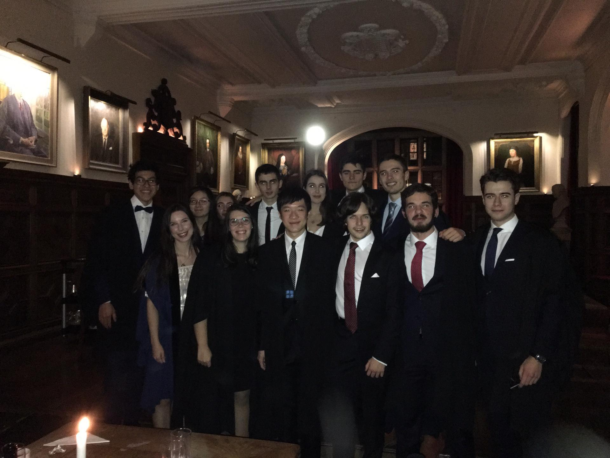

The Cambridge University Portuguese Society (CUPor) was founded in 2019 to:
- Bring the Portuguese community in the University of Cambridge together
- Facilitate the integration of Portuguese students in Cambridge
- Promote the University of Cambridge in Portugal
- Showcase the best that Portuguese Culture, tradition and history have to offer to the University